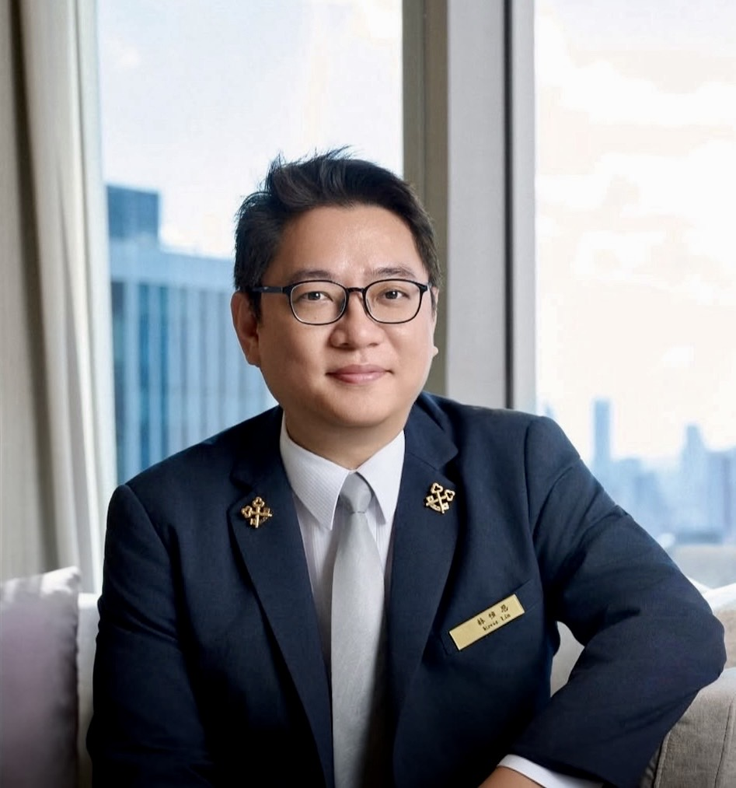

PRESIDENT'S MESSAGE
理事長的話
從 Concierge 的視角，看見台灣、服務與我們彼此連結的力量。

中華民國旅館金鑰匙協會林惟恩 Kevin Lin理事長
FROM OUR PRESIDENT
讓每一次相遇，
都成為值得珍藏的旅程。
金鑰匙不只是一枚徽章，也代表著專業、信任，以及一群 Concierge 透過服務與友誼彼此連結的力量。
“In Service Through Friendship.”
從 Concierge 的視角，看見台灣、服務與我們彼此連結的力量。

金鑰匙不只是一枚徽章，也代表著專業、信任，以及一群 Concierge 透過服務與友誼彼此連結的力量。
“In Service Through Friendship.”